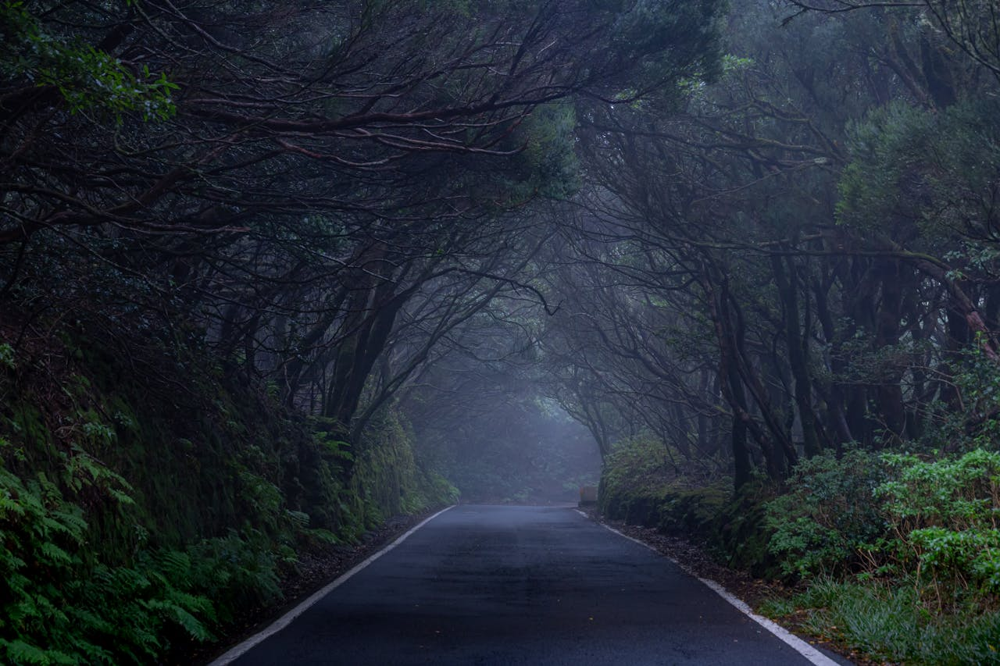
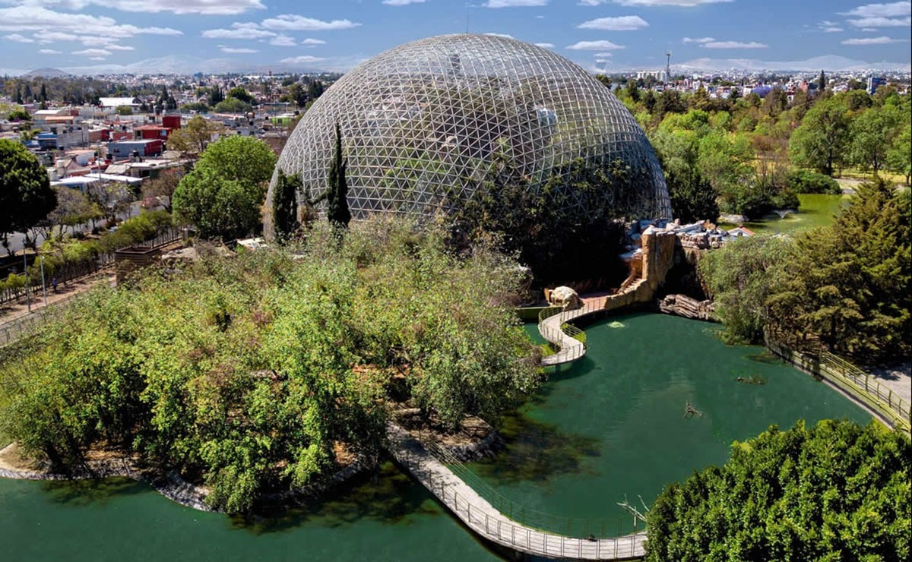
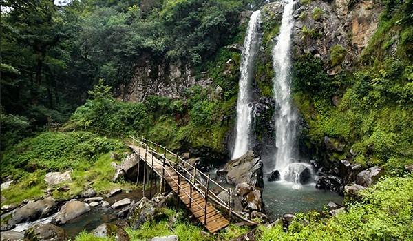
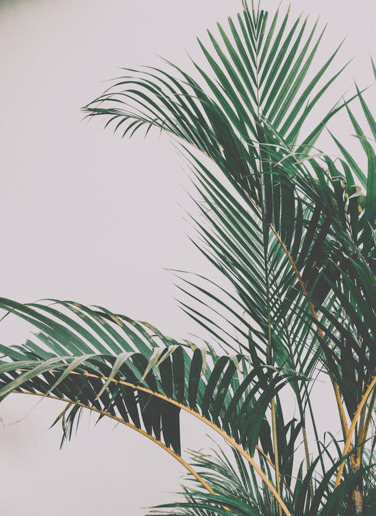
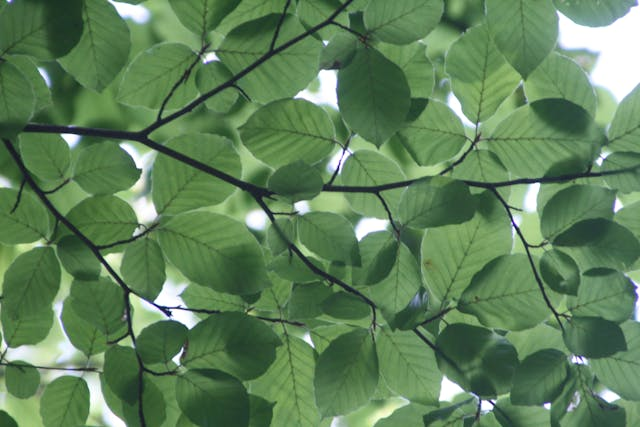
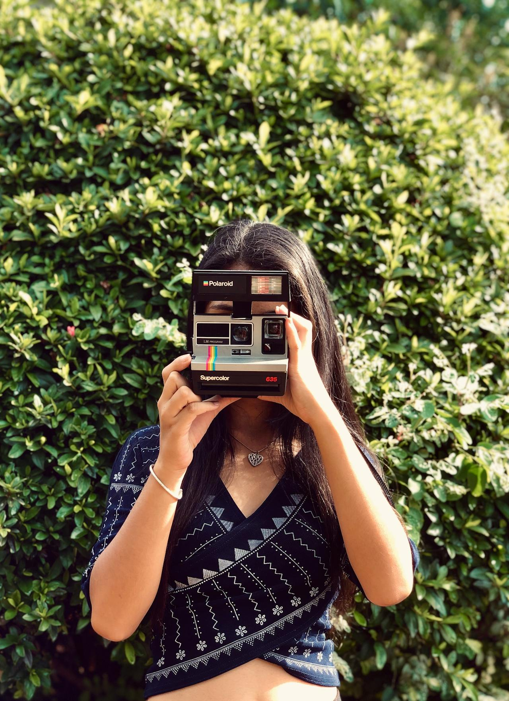

Bosque en la carretera
Una de las cosas que más disfruto es hacer viajes en carretera, especialmente cuando el destino es un campamento en el bosque. Hay algo en el paisaje, la sensación de libertad y el aire fresco que me llena de energía. Me encanta ver cómo el entorno cambia poco a poco mientras avanzo, y saber que al final me espera una aventura en la naturaleza. Son momentos que me permiten desconectar y disfrutar de lo simple, algo que siempre aprecio.
Interesante parque
Uno de mis lugares favoritos en Puebla es el Parque Ecológico. Me encanta ir porque ofrece un espacio increíble para desconectar de la ciudad y disfrutar de la naturaleza. Hay tantas cosas que se pueden hacer ahí: desde caminar o andar en bicicleta por sus senderos, hasta simplemente relajarse y hacer un picnic con amigos. También tiene áreas para practicar deportes o disfrutar de los lagos y jardines que lo rodean. Es un lugar ideal para pasar un día tranquilo y reconectar con el entorno natural.
Experiencias con cascadas
Si estás buscando una aventura y una experiencia inolvidable, definitivamente te recomiendo visitar las Cascadas Paraíso en Puebla. Es un lugar increíble donde puedes conectarte con la naturaleza y disfrutar de paisajes impresionantes. La caminata hacia las cascadas es una experiencia en sí misma, llena de hermosos senderos rodeados de vegetación. Al llegar, el sonido del agua y la vista de las cascadas te llenan de paz y energía. Es perfecto para quienes aman las actividades al aire libre y buscan una escapada llena de vivencias únicas.
Conoce el cielo
Algo que siempre me emociona en cada viaje es cómo el cielo parece cambiar con cada nueva aventura. A veces está lleno de nubes que se mueven lentamente, otras veces es un lienzo despejado y brillante. Los colores que toma a lo largo del día son simplemente espectaculares. Desde los tonos suaves del amanecer hasta los vibrantes colores del atardecer, el cielo siempre tiene una sorpresa reservada para quienes se toman un momento para admirarlo.
Es especialmente emocionante ver cómo el cielo cambia dependiendo del lugar en el que estés. Si estás en las montañas, los cielos pueden parecer más cercanos y amplios, mientras que en la playa los colores se reflejan en el agua, creando una imagen de ensueño. Cada experiencia es única, y capturar esos momentos se ha vuelto casi como un ritual para mí. Siempre llevo mi cámara para poder guardar esos recuerdos en una fotografía.
Por eso, mi recomendación es siempre tomar fotografías del cielo, no importa en qué parte del mundo estés. A través de la cámara, puedes conservar esa belleza tan efímera y revisitarla una y otra vez. Cada foto cuenta una historia distinta, una mezcla de colores y emociones que transforman algo tan cotidiano en algo mágico.
Contacto con la naturaleza
A veces, no es necesario embarcarse en grandes aventuras para sentir una verdadera conexión con la naturaleza. Algo tan simple como cuidar de las plantas puede ser igual de gratificante. Tener plantas a tu alrededor y verlas crecer día a día es una forma de conectarse con el ciclo natural de la vida. Cada hoja nueva, cada brote, es un recordatorio de la belleza que hay en lo cotidiano.
Cuidar de las plantas también puede ser una experiencia tranquilizadora y terapéutica. Regarlas, podarlas o simplemente pasar tiempo observándolas tiene un efecto calmante que ayuda a reducir el estrés. Es increíble cómo algo tan sencillo puede brindarte una sensación de paz y bienestar, permitiendo que te tomes un respiro de la rutina diaria.
Si alguna vez sientes que necesitas un poco de serenidad, recomiendo rodearte de plantas. No solo mejoran el ambiente, sino que también te conectan con la naturaleza de una forma muy especial, desde la comodidad de tu hogar. A veces, los pequeños detalles, como cuidar una planta, pueden hacer una gran diferencia en cómo nos sentimos.
Donde comprar
Si estás buscando lugares donde puedas comprar flores, plantas o incluso algunos souvenirs necesarios para tu espacio, te recomiendo explorar varias opciones locales. Sin embargo, si prefieres algo práctico, el ícono en la esquina inferior derecha de esta sección te redirige a Home Depot, donde encontrarás una gran variedad de plantas y todo lo que necesitas para cuidarlas.

Ciclo de las plantas
El ciclo de vida de las plantas es un proceso fascinante que abarca varias etapas, comenzando con la germinación. Todo comienza cuando una semilla, bajo las condiciones adecuadas de humedad, temperatura y luz, empieza a absorber agua y se hincha. Con el tiempo, la semilla rompe su cubierta y una pequeña plántula emerge.
A medida que la plántula crece, desarrolla raíces que le permiten absorber nutrientes del suelo y una estructura de tallo y hojas que facilitan la fotosíntesis, un proceso vital en el que la planta convierte la luz solar en energía. Durante esta etapa, las plantas maduran y se preparan para reproducirse, ya sea a través de flores, que producen semillas, o mediante otros métodos, como la producción de esporas.
Finalmente, después de florecer y dar semillas, las plantas completan su ciclo de vida. Algunas especies pueden vivir durante muchos años, mientras que otras tienen un ciclo de vida más corto. Sin importar la duración, cada planta desempeña un papel crucial en el ecosistema, contribuyendo a la producción de oxígeno y proporcionando alimento y hábitat para otras formas de vida.
Imagen con filtro
Tomar fotos de la naturaleza es una forma maravillosa de capturar la belleza del mundo que nos rodea. Para lograr imágenes impresionantes, aquí tienes algunas recomendaciones. Primero, intenta fotografiar en la "hora dorada", que es justo después del amanecer o antes del atardecer, cuando la luz es suave y cálida, creando un ambiente mágico en tus imágenes.
Otro consejo es utilizar diferentes ángulos y perspectivas. No dudes en agacharte, subirte a un lugar alto o acercarte a los detalles para obtener tomas únicas. Además, considera incluir elementos en primer plano para dar profundidad a tus fotos. Los filtros también son una herramienta valiosa; por ejemplo, un filtro polarizador puede ayudar a reducir los reflejos en superficies como agua o hojas, y a aumentar la saturación de los colores, haciendo que el cielo y la vegetación luzcan más vibrantes.
Por último, no olvides experimentar con la configuración de tu cámara o teléfono. Ajusta la exposición y el enfoque para resaltar lo que deseas capturar. Recuerda que la práctica es fundamental, así que sal y disfruta de la naturaleza mientras desarrollas tu habilidad para la fotografía. ¡Las mejores imágenes a menudo surgen de momentos inesperados!
